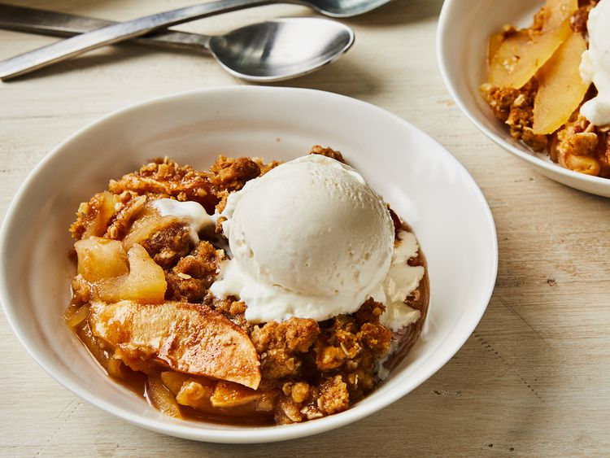

Dessert
Apple Crisp
This apple crisp recipe is a delicious dessert made with fresh apples and a sweet, crunchy topping. It is perfect for fall and easy to prepare.


Dessert
This apple crisp recipe is a delicious dessert made with fresh apples and a sweet, crunchy topping. It is perfect for fall and easy to prepare.